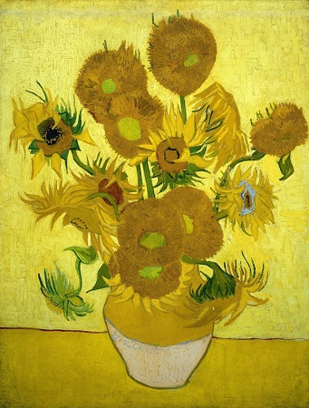

Van Gogh Museum| T: (020) 570 52 00| E:info@vangoghmuseum.nl

Starry Night
George Armada on Van Gogh's most recognizable "Starry Night"
"Sed maximus quam diam. Integer venenatis libero vel quam lobortis porta. Phasellus mollis vitae dui non mattis. Nulla auctor feugiat justo.Curabitur quis neque ut nisl venenatis aliquam. Nulla at odio dictum, accumsan sem at, fringilla turpis. Duis pharetra convallis felis. Cras eu egestas elit. Aliquam nec nisi eu orci interdum volutpat. Donec risus ligula, feugiat et fermentum sagittis, aliquam non quam."

Sunflowers
Frank O'Brien on Van Gogh's "Sunflowers"
"Nullam ac luctus risus. Mauris egestas gravida dignissim. Integer ac tristique nisi. Sed luctus vestibulum bibendum. Ut rhoncus dui at ligula fermentum, eget lacinia purus vestibulum. Morbi nunc massa, finibus id lacinia nec, lacinia nec nunc. Donec at neque a purus dapibus consectetur. Praesent rhoncus, quam eget lacinia sollicitudin, nisl nisl commodo urna, nec malesuada dui erat vel nisl."

Girl in White
Elaine Carmody on "Girl in White"
"Sed varius ullamcorper orci sit amet convallis. Ut id felis eget leo facilisis finibus. Donec fringilla mauris vel risus consectetur, et eleifend mi bibendum. Interdum et malesuada fames ac ante ipsum primis in faucibus. Fusce tincidunt risus nec neque commodo malesuada. Nunc a ex placerat, pellentesque nisi in, ultricies libero.Sed non gravida nibh. Class aptent taciti sociosqu ad litora torquent per conubia nostra, per inceptos himenaeos. In dapibus malesuada feugiat. Mauris quis vehicula metus. Ut vel ligula tincidunt, blandit tellus at, ultricies est."
The Olive Orchard
Jane Vlies on "The Olive Orchard"
"In feugiat sem ac ipsum dictum, vel feugiat enim tempor. Sed ut vehicula ligula. Proin eu erat fermentum, tempus lacus et, tempus ipsum. Sed aliquet felis quis lacus fringilla luctus. Donec tempus dapibus nisi, sed congue erat convallis pretium. Sed pretium, erat nec maximus elementum, risus nibh dapibus nisi, id maximus ipsum mi faucibus dolor."
Van Gogh's Self Portrait
Maia O'Young on Van Gogh's "Self Portrait."
"Integer commodo justo porta lectus placerat, vitae ultricies nibh efficitur. Vestibulum ante ipsum primis in faucibus orci luctus et ultrices posuere cubilia curae; Quisque mattis et turpis vitae facilisis. Maecenas tempus a urna quis luctus. Morbi et odio urna. Mauris at augue in purus viverra egestas ac vitae tellus."